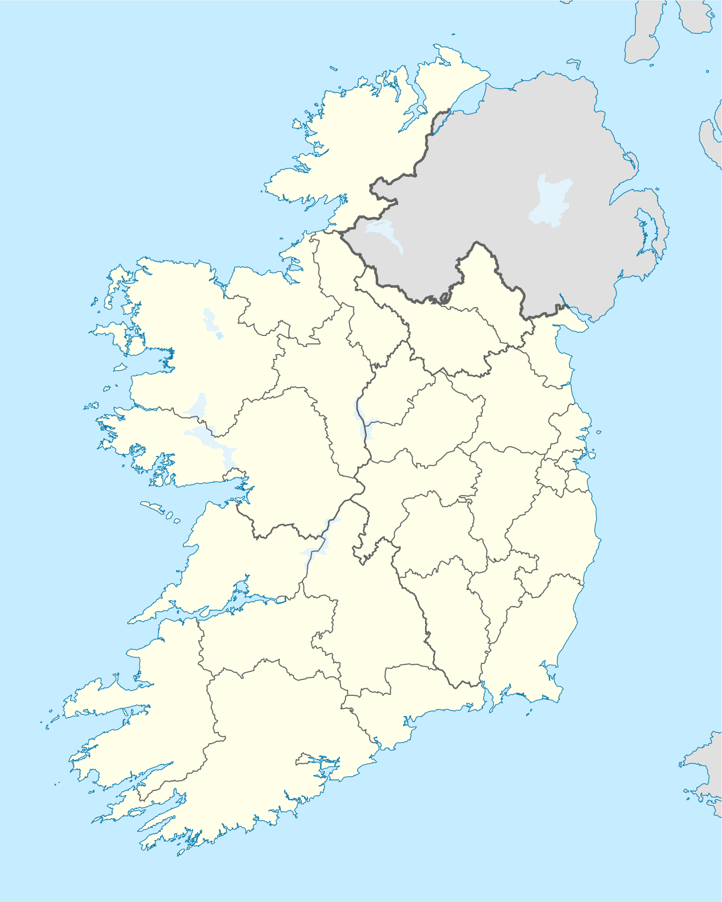

투어버스는 정해진 코스를 정해진 시간에 돕니다. 이 로드트립은 7인승 차로 움직입니다. 사진 찍고 싶은 곳에서 멈추고, 정차지를 그날 바꿔도 됩니다. 운전과 안내는 서현 Andrew (김서현)가 한국어로 합니다.
미팅 장소는 Blanchardstown Shopping Centre이고, 숙소 앞 픽업·드랍은 편도당 1인 €5입니다.
가격에는 차량·연료·주차·톨비·운전·한국어 안내가 들어 있고, 식비와 입장료는 각자 냅니다.
기본 운영은 3~5인이지만, 같은 코스를 원하는 분을 오픈채팅과 인스타그램에서 모아 한 팀으로 출발하는 일정을 수시로 엽니다. 아래 모집 일정에 자리가 있으면 바로 합류할 수 있습니다.
모집 일정
지금 모집 중인 동행 일정
출발이 확정된 일정에 합류하면 1인 부담이 줄어듭니다.
카톡으로 문의
지도에서 지역 고르기
지역을 누르면 그곳을 지나는 코스와 가격이 나옵니다.

직접 운영해 온 22개 코스
카드를 누르면 정차지 사진, 입장료, 인원별 가격이 나옵니다. 목록에 없는 곳도 맞춤으로 갈 수 있습니다.
코스별 가격 비교
4인 기준 총액과 1인 부담입니다. 행을 누르면 인원별 가격이 나옵니다.
| 코스 | 일정 | 4인 총액 | 1인 (4인 기준) |
|---|
총액은 인원과 무관한 고정 금액이라 인원이 많을수록 1인 부담이 줄어듭니다.
투어 가격 계산
코스와 인원을 고르면 1인 부담이 바로 나옵니다.
- 위클로 — 반나절 B (파워스코트)6시간
- 4인 기준 1인 요금€40
- 4인 합계€160
※ 코스 옵션별 상세 가격·일정은 위 카드 또는 가격 비교표 클릭으로 확인할 수 있습니다.
※ 가격은 코스+가이딩 비용. 식비·입장료는 별도 (FAQ 참고).
투어버스와 다른 점
| 항목 | 투어버스 | 이 로드트립 |
|---|---|---|
| 언어 | 영어 | 한국어 |
| 탑승 인원 | 40+ 명 | 3~5명 |
| 코스 자유도 | 고정 | 유연 조정 |
| 픽업 | 시내 집결 | 도어투도어 +€5 |
당일치기 로드트립 자주 묻는 질문
모집 중 일정 합류는 출발 3일 전까지 자리가 있을 때 가능합니다. 페이지 상단의 "지금 모집 중인 동행 일정"에서 확인해 주세요.
차량 3열 좌석 한 자리는 레그룸이 다소 좁습니다. 4인까지는 짐을 실어도 전혀 무리가 없지만, 5인일 때는 한 분이 3열에 앉으셔야 합니다. 반나절·근교 코스(6~10시간)는 크게 불편하지 않지만, 12시간이 넘는 장거리 코스는 4인 이하를 권해 드립니다.
그래도 5인으로 가시겠다면 3열 자리를 일행끼리 교대로 이용하시길 권합니다. 정차지마다 자리를 바꾸면 한 사람에게 부담이 몰리지 않습니다.
짐은 캐리어 4~6개까지 실리고, 2열 좌석을 접으면 훨씬 많이 실을 수 있습니다. 큰 위탁수하물이 여러 개라면 미리 알려 주세요.
① 모집 중 일정 합류: 페이지 상단의 출발 확정 일정에 자리 있으면 합류 가능 (1인당 가격 합리적). 다른 동행분들과 차량 한 대로 함께 이동.
② 1~2인 별도 견적: 1~2인만 따로 진행할 수도 있지만 1인당 가격이 크게 올라갑니다 (차량 한 대 비용을 1~2인이 나누기 때문). 카톡으로 견적 문의 주세요.
버튼 클릭 시 자동으로 문의 메시지가 클립보드에 복사되고 카톡 오픈채팅이 열립니다. 채팅창에 붙여넣기만 하시면 합류 문의 완료입니다.
합류 시 다른 동행분들과 차량 한 대로 함께 이동하며, 한국어로 소통합니다.
또한 "일기예보 기반 즉석 루트 여행"이 따로 있습니다. 날짜만 먼저 정하고, 출발 1일 전 일기예보를 보고 22개 코스 중 그날 날씨가 가장 좋은 코스로 확정하는 방식입니다 (코스 목록의 첫 카드에서 상세 확인).
- 차량·연료·일반 톨비·일반 주차비
- 운전·한국어 가이딩
- 코스 안내 + 사진 명소 추천
- 식비 (점심·저녁): 각자 본인 식사비만 부담, 1인 약 €15~25 (아래 별도 FAQ 참고)
- 유료 입장료 (모허 절벽·뉴그레인지·타이타닉 박물관 등)
- 여행자 보험 (불포함, 개인 가입 권장)
- 기념품·개인 비용
입장료·기타 추가 사항은 출발 전에 "어디를 유료로 들어갈지"를 함께 정한 내용을 기준으로 진행하며, 사전에 합의되지 않은 비용이 당일에 갑자기 붙는 일은 없습니다.
다만 이렇게 사전에 확정된 금액에 대해서는 여행 종료 후 금액 관련 이의제기나 환불 요청을 받기 어려운 점 양해 부탁드립니다. 궁금하거나 조정하고 싶은 부분은 출발 전에 미리 카톡으로 충분히 정리해 드립니다.
개인 식사비는 1인당 약 €15~25 예상하시면 됩니다.
알레르기·종교적 식단 제한·선호 음식이 있으시면 미리 카톡으로 알려 주세요. 식당 추천은 Andrew가 안내해 드립니다.
시내·근교 호텔에서 LUAS·버스로 접근 가능, 무료 주차 공간 넓음
도어투도어 옵션 (편도 단위 선택):
- 픽업 (출발 시): 숙소·집 앞에서 직접 픽업 · +€5/인
- 드랍 (귀가 시): 미팅 포인트 대신 숙소·집 앞까지 직접 드랍 · +€5/인
시내 호텔·Airbnb 추천도 가능하니 카톡으로 문의 주세요.
다만 전체 12~16시간 한도 내에서 조정합니다. 당일 점심 메뉴, 카페 추천, 갑자기 들르고 싶은 곳은 그때그때 말씀해 주시면 됩니다.
카시트: Andrew는 카시트를 별도로 보유하고 있지 않습니다. 직접 소유하신 카시트가 있으면 차량에 설치해 이용 가능 (예약 시 미리 알려 주세요).
휴식·식사: 어르신·어린이 동반 시 휴식·간식 시간을 자주 안내해 드립니다. 코스 강도(걷기 양·산행 난이도)도 사전에 조율합니다.
차량: 7인승 MPV로 어린이 카시트·유모차 적재 모두 여유가 있습니다.
- 예약 시: 50% 예약금 (예약 확정 시점에 선결제)
- 여행 완료 후: 나머지 50% + 추가 발생 비용 (입장료·시내 유료 주차 등 실비)
원화 결제 환율: 원화로 결제하시면 예약금과 잔금 모두 각 송금 시점의 환율을 기준으로 원화 금액이 정해집니다. 예약금·잔금은 송금일이 달라 적용 환율이 서로 다를 수 있습니다.
예약금 입금 후 일정·코스 최종 확정해 드리고, 여행 완료 시점에 잔금과 발생 실비(영수증 기준)를 함께 정산합니다.
- 여행 48시간 이전 취소 → 예약금 전액 환불
- 여행 전날까지 취소 (24~48시간 전) → 예약금의 50% 환불
- 여행 당일 취소 → 환불 불가 (차량·일정 확보 완료 상태)
일정 변경: 취소 대신 일정 변경을 원하시면 가능한 한 무료로 조정해 드립니다(가능 일정 확인 필요). 가급적 일찍 카톡으로 공유해 주세요.
전체 코스 한눈에 (가격 낮은 순)
더블린 출발 한국어 프라이빗 당일 투어 22개 · Andrew가 직접 설계·운영. 7인승 차량, 도어투도어 픽업 가능. 입장료·식비 별도.
- 위클로 — 반나절 B (파워스코트) (위클로)
6시간 일정 · 1인 €40 (4인 기준)·€35(5인) · 투어 총액 €170 · 유료 입장 약 €8/인
정차지: 파워스코트 하우스 또는 폭포 · 글렌달록 · 샐리 갭 · 러프 테이 뷰포인트 · Ballinastoe Woods · 조니 폭스 펍 - 뉴그레인지 · 드록헤다 (미스·루스)
7시간 일정 · 1인 €45 (4인 기준)·€35(5인) · 투어 총액 €180 · 유료 입장 약 €18/인
정차지: 뉴그레인지 · Old Mellifont Abbey · Clogherhead 절벽 워크 · 드록헤다 - 뉴그레인지 · 나반 (Hill of Tara) (미스)
7시간 일정 · 1인 €45 (4인 기준)·€35(5인) · 투어 총액 €180 · 유료 입장 약 €18/인
정차지: 뉴그레인지 · Old Mellifont Abbey · Dalgan Park · Hill of Tara - 위클로 — 반나절 A (위클로)
6시간 일정 · 1인 €50 (4인 기준)·€40(5인) · 투어 총액 €190 · 입장료 거의 없음(무료 정차지)
정차지: 아보카 본점 · 킬마커러 식물원 · 글렌달록 · 샐리 갭 · 러프 테이 뷰포인트 · Ballinastoe Woods · 조니 폭스 펍 - 위클로 — 하루 종일 (위클로)
10시간 일정 · 1인 €60 (4인 기준)·€50(5인) · 투어 총액 €240 · 입장료 거의 없음(무료 정차지)
정차지: 글렌 비치 클리프 워크 (Glen Beach Cliff Walk) · 브리타스 베이 또는 에네라일리 비치 · 아보카 본점 · 킬마커러 식물원 · 글렌달록 · 샐리 갭 · 러프 테이 뷰포인트 · Ballinastoe Woods · 조니 폭스 펍 - 아일랜드 중부 (멀링거·포트리셔) (중부)
9시간 일정 · 1인 €60 (4인 기준)·€50(5인) · 투어 총액 €240 · 유료 입장 약 €20/인
정차지: 멀링거 대성당 · 릴리풋 (Lilliput) · 벨비디어 하우스 가든 · Emo Court · Moore Abbey Woods · 킬데어 빌리지 - 카셸 · 리즈모어 · 워터포드 (워터포드)
12시간 일정 · 1인 €100 (4인 기준)·€80(5인) · 투어 총액 €400 · 유료 입장 약 €17/인
정차지: 락 오브 카셸 · Vee Pass · 리즈모어 성 · 던가반 · Mahon Falls · 워터포드 그린웨이 맛보기 · Copper Coast 해안 드라이브 · 워터포드 도심 · 옵션: 킬케니 경유 - 모허의 절벽 · 리머릭 (번래티) (클레어·리머릭)
11시간 일정 · 1인 €100 (4인 기준)·€80(5인) · 투어 총액 €410 · 유료 입장 약 €22/인
정차지: 버렌 국립공원 · 모허의 절벽 · 번래티 캐슬 · 리머릭 도심 - 모허의 절벽 · 골웨이 (골웨이·클레어)
12시간 일정 · 1인 €110 (4인 기준)·€85(5인) · 투어 총액 €430 · 유료 입장 약 €10/인
정차지: 모허의 절벽 · 버렌 국립공원 · 골웨이 시내 - 코즈웨이 1 (벨파스트 저녁) (북아일랜드)
13시간 일정 · 1인 €110 (4인 기준)·€90(5인) · 투어 총액 €450 · 유료 입장 약 €44/인
정차지: Dunluce Castle · 자이언트 코즈웨이 · Ballintoy Harbour · Carrick-a-Rede 전망 · The Dark Hedges · Glenoe Waterfall · 벨파스트 - 더니골 남부 (도니골)
15시간 일정 · 1인 €125 (4인 기준)·€100(5인) · 투어 총액 €500 · 유료 입장 약 €6/인
정차지: 슬리브리그 (Slieve League) · Assaranca Waterfall · 점심 · Ardara (전통 털옷 구경) · 돌하르방 · Fairy Bridge · Enniskillen Castle 또는 Glencar Waterfall · 슬라이고 (Sligo) · 저녁 - 코네마라 · 골웨이 (코네마라·골웨이)
13시간 일정 · 1인 €125 (4인 기준)·€100(5인) · 투어 총액 €500 · 유료 입장 약 €18/인
정차지: Kylemore Abbey · 코네마라 국립공원 · Seal Observatory · 라운드스톤 보그 · 골웨이 도심 - 코크 (킨세일·블라니·코브) (코크)
13시간 일정 · 1인 €125 (4인 기준)·€100(5인) · 투어 총액 €500 · 유료 입장 약 €32/인
정차지: 킨세일 (James Fort · Charles Fort) · 블라니 캐슬 (언변의 돌) · 블랙락 캐슬 · 코브 (Cobh) · 코크 시내 - 서부 성지순례 (Kylemore·Knock) (골웨이·메이요)
13시간 일정 · 1인 €125 (4인 기준)·€100(5인) · 투어 총액 €500 · 유료 입장 약 €18/인
정차지: 녹 성모성지 (Knock) · 발린터버 수도원 (Ballintubber Abbey) · Kylemore Abbey · 골웨이 대성당 - 코즈웨이 2 (런던데리 포함) (북아일랜드)
14시간 일정 · 1인 €130 (4인 기준)·€100(5인) · 투어 총액 €510 · 유료 입장 약 €44/인
정차지: Dunluce Castle · 자이언트 코즈웨이 · Ballintoy Harbour · Carrick-a-Rede 전망 · The Dark Hedges · Gortmore 전망대 · 런던데리 관광 - 더니골 북부 — 산 (에리갈·글렌뷔) (도니골)
14시간 일정 · 1인 €130 (4인 기준)·€105(5인) · 투어 총액 €520 · 유료 입장 약 €16/인
정차지: 슬리브리그 · Assaranca Waterfall · 점심 · Ardara · 에리갈 산 (Errigal) · 글렌뷔 캐슬 (Glenveagh) · 레터케니 - 메이요 북부 · 아킬 아일랜드 (메이요)
14시간 일정 · 1인 €140 (4인 기준)·€110(5인) · 투어 총액 €550 · 입장료 거의 없음(무료 정차지)
정차지: 아킬 아일랜드 (킴 비치 등) · 포르타클로이 절벽 루프워크 · 다운패트릭 헤드 - 더니골 북부 — 바다 (Fanad·Malin Head) (도니골)
15시간 일정 · 1인 €140 (4인 기준)·€110(5인) · 투어 총액 €550 · 유료 입장 약 €6/인
정차지: 슬리브리그 · Assaranca Waterfall · 점심 · Ardara · Fanad Head 또는 Malin Head · 레터케니 - 더니골 북부 집중 (Grianan~Malin) (도니골)
15시간 일정 · 1인 €140 (4인 기준)·€115(5인) · 투어 총액 €570 · 유료 입장 약 €10/인
정차지: Grianan of Aileach (Greenan) · Inch Wildfowl Reserve · 에리갈 산 · 글렌뷔 캐슬 · Fanad Head · Malin Head · 데리 - 케리 · 딩글 하루 맛보기 (케리)
16시간 일정 · 1인 €160 (4인 기준)·€130(5인) · 투어 총액 €640 · 유료 입장 약 €5/인
정차지: Ross Castle · Torc Waterfall · Ladies View · Gap of Dunloe · 딩글 (점심 · 머피 아이스크림) · Dunmore Head · Dunquin Pier · Conor Pass · 트랄리 - 케리 집중 (Ring of Kerry) (케리)
16시간 일정 · 1인 €160 (4인 기준)·€130(5인) · 투어 총액 €650 · 유료 입장 약 €5/인
정차지: Ross Castle · Torc Waterfall · Ladies View · Gap of Dunloe · Cahergall Stone Fort · Castlecove · Kenmare · 리머릭 - 케리 · 구게인 바라 · 코크 (케리·코크)
16시간 일정 · 1인 €170 (4인 기준)·€140(5인) · 투어 총액 €690 · 유료 입장 약 €13/인
정차지: Ross Castle · Torc Waterfall · Ladies View · Gap of Dunloe · 구게인 바라 (Gougane Barra) · 밴트리 · Mizen Head · Baltimore Beacon · (옵션: Timoleague·Drombeg 환상열석) · 코크
한국어 가이드 · 수수료 없는 합리적 가격 (플랫폼 미경유) · 코스 자유 변경·커스텀 가능 · 카카오톡 1:1 문의. 케리·도니골·메이요 등 일반 투어버스·플랫폼에 없는 코스도 운영.